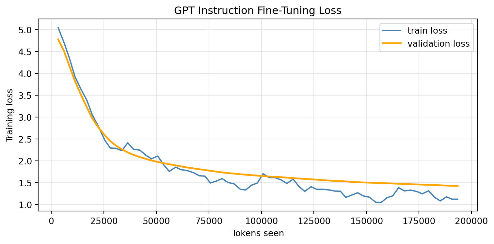
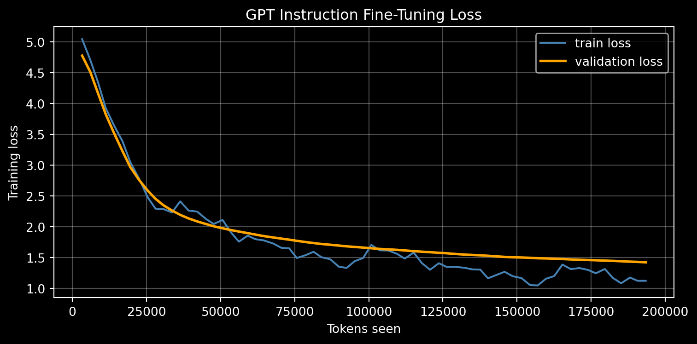
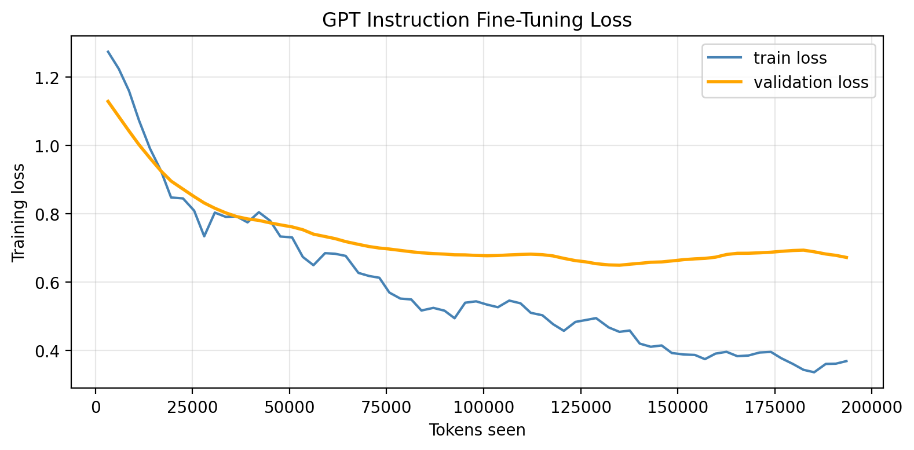
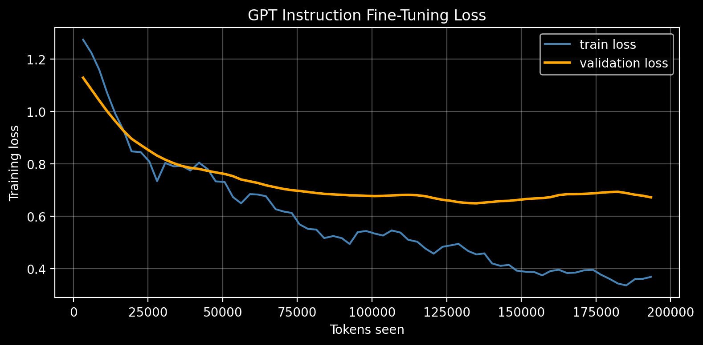

def download_and_load_file(file_path, url):
if not os.path.exists(file_path):
with urllib.request.urlopen(url) as response:
text_data = response.read().decode("utf-8")
with open(file_path, "w", encoding="utf-8") as file:
file.write(text_data)
else:
with open(file_path, "r", encoding="utf-8") as file:
text_data = file.read()
with open(file_path, "r") as file:
data = json.load(file)
return data
file_path = "instruction-data.json"
url = (
"https://raw.githubusercontent.com/rasbt/LLMs-from-scratch"
"/main/ch07/01_main-chapter-code/instruction-data.json"
)
data = download_and_load_file(file_path, url)Overview
This is the second post in a three-part series on building a large language model from scratch.
In the previous post we covered the first stage, pretraining a decoder-only GPT on next-token prediction. In this post we tackle the second stage: instruction tuning.
Introduction
A pretrained language model, having only ever been trained to predict the next token over raw text, will happily continue a prompt in whatever style the surrounding text suggests, rather than treating the prompt as a request to be fulfilled. By fine-tuning the pretrained model on a dataset of explicit instruction/response pairs, we teach it to recognize an instruction and produce an appropriate response.
Mechanically, instruction tuning is still just next-token prediction; the only thing that changes is the data. Instead of raw documents, we train on formatted examples that pair an instruction with the desired response. The model learns the mapping from instruction to response, while the masking trick we introduce below ensures the loss focuses on teaching the model what to generate rather than how to parrot the prompt.
This post is heavily inspired by, and follows the approach of, Sebastian Raschka’s excellent book Build a Large Language Model (From Scratch) (Raschka 2024). The instruction dataset we use here was curated by the book’s author. Where Raschka’s implementation is in PyTorch, ours is written in JAX/Flax, continuing the stack we established in the previous post.
To instruction tune our model, we will work through the following steps:
- Data processing: Downloading, splitting, formatting, and batching the instruction dataset.
- Loading the pretrained model: Restoring the GPT weights we trained in the previous post.
- Fine-tuning: Training the model on the instruction data with a loss that ignores the prompt and padding tokens.
- Evaluation: Inspecting the model’s responses before and after instruction tuning.
Finally, since our model was pretrained on a small corpus of synthetic short stories, we will also load OpenAI’s pretrained GPT-2 weights and instruction tune that model, giving us a more capable assistant to compare against.
Data Processing & Formatting
Before we can fine-tune, we need to wrangle the instruction data. This involves downloading the dataset, splitting it into training, validation, and test sets, formatting each example into a consistent prompt template, and finally batching everything into padded tensors the model can consume.
Downloading
We start with a small helper that downloads the instruction dataset to disk on first use and loads it from the local cache thereafter. The dataset is a JSON file of instruction/response records curated by Sebastian Raschka for Build a Large Language Model (From Scratch); each entry contains an instruction, an optional input, and the desired output.
Splitting
With the data in memory, we split it into three sets: 85% for training, 10% for testing, and the remaining 5% for validation. The training set drives the weight updates, the validation set lets us monitor generalization during fine-tuning, and the held-out test set is reserved for the final qualitative evaluation.
train_portion = int(len(data) * 0.85) # 85% for training
test_portion = int(len(data) * 0.1) # 10% for testing
val_portion = len(data) - train_portion - test_portion # 5% for validation
train_data = data[:train_portion]
test_data = data[train_portion:train_portion + test_portion]
val_data = data[train_portion + test_portion:]Formatting
For the model to reliably learn the instruction-to-response mapping, every example must be presented in a consistent structure. We adopt the Alpaca-style prompt template popularized by Raschka’s book: a fixed preamble, followed by an ### Instruction: section, and, when the example provides one, an ### Input: section. The format_input helper below assembles this prompt from a dictionary entry. Note that it deliberately stops before the response; the response is appended separately during encoding, which lets us treat the prompt and the response differently when computing the loss.
def format_input(entry):
instruction_text = (
f"Below is an instruction that describes a task. "
f"Write a response that appropriately completes the request."
f"\n\n### Instruction:\n{entry['instruction']}"
)
input_text = (
f"\n\n### Input:\n{entry['input']}" if entry["input"] else ""
)
return instruction_text + input_textLoading
As in the pretraining post, we use GPT-2’s pretrained Byte-Pair Encoding vocabulary via the tiktoken library, so the tokenization is identical to the one our model was pretrained with.
tokenizer = tiktoken.get_encoding("gpt2")The InstructionDataset below holds our examples and pre-encodes them up front. For each entry it builds the full training text by concatenating the formatted prompt with a ### Response: section containing the desired output, then tokenizes the whole thing once in __post_init__. Encoding eagerly trades a little memory for speed: we pay the tokenization cost once rather than on every epoch.
@dataclass
class InstructionDataset:
"""Pre-encoded dataset inside post_init. Faster but requires more memory"""
data: list
def __post_init__(self):
# Encode every entry once up front.
self.encoded_texts = []
for entry in self.data:
instruction_plus_input = format_input(entry)
response_text = f"\n\n### Response:\n{entry['output']}"
full_text = instruction_plus_input + response_text
self.encoded_texts.append(tokenizer.encode(full_text))
def __len__(self):
return len(self.data)
def __getitem__(self, idx: int):
return self.encoded_texts[idx]
def collate_fn(
batch,
pad_token_id=50256,
ignore_index=-100,
allowed_max_length=256,
):
batch_max_length = max(len(item)+1 for item in batch)
inputs_lst, targets_lst = [], []
for item in batch:
new_item = item.copy()
new_item += [pad_token_id]
padded = (new_item + [pad_token_id] *(batch_max_length - len(new_item)))
inputs = np.array(padded[:-1])
targets = np.array(padded[1:])
mask = targets == pad_token_id
indices = np.nonzero(mask)[0]
if indices.shape[0] > 1:
targets[indices[1:]] = ignore_index
if allowed_max_length is not None:
inputs = inputs[:allowed_max_length]
targets = targets[:allowed_max_length]
inputs_lst.append(inputs)
targets_lst.append(targets)
inputs_tensor = np.stack(inputs_lst)
targets_tensor = np.stack(targets_lst)
return inputs_tensor, targets_tensorThe collate_fn is where the interesting work happens. Because the examples in a batch have different lengths, we must pad them to a common length so they can be stacked into a single array. For each item we append an end-of-text token (50256), pad out to the batch’s longest sequence with the same token, and then form the inputs and targets by shifting one position to the right, exactly as in next-token prediction.
The subtle part is the target masking. We want the model to learn from the real tokens, but not waste capacity learning to predict an endless run of padding. So we locate the padding positions in each target and replace all but the first one with ignore_index (-100), an ID our loss function will skip. Keeping the first end-of-text token as a valid target teaches the model when to stop generating; masking the rest keeps the padding from polluting the loss. Finally, both inputs and targets are truncated to allowed_max_length to bound memory usage.
Note
A natural question is why we do not also mask out the prompt tokens (the instruction and input), so that the loss is computed on the response alone. This is a common refinement, and Raschka discusses it in his book. Here we follow the simpler approach of training on the full sequence, which still works well in practice; the model sees the prompt as context and learns to produce the response that follows it.
With a dataset and a collate function, we wrap everything in a grain data loader.
def load_and_preprocess_data(data: list, batch_size: int, shuffle=False):
dataset = InstructionDataset(data)
print(f"Loaded {len(dataset)} samples")
sampler = pygrain.IndexSampler(
len(dataset),
shuffle=shuffle,
seed=42,
shard_options=pygrain.NoSharding(),
num_epochs=1,
)
dl = pygrain.DataLoader(
data_source=dataset,
sampler=sampler,
operations=[
pygrain.Batch(batch_size=batch_size, drop_remainder=True, batch_fn=collate_fn)
],
)
return dlWe build a data loader for each split, using a batch size of 8 and shuffling only the training data.
train_dl = load_and_preprocess_data(data=train_data, batch_size=8, shuffle=True)
val_dl = load_and_preprocess_data(data=val_data, batch_size=8, shuffle=False)
test_dl = load_and_preprocess_data(data=test_data, batch_size=8, shuffle=False)Loaded 935 samples
Loaded 55 samples
Loaded 110 samplesLoad Pretrained GPT
Instruction tuning starts from the pretrained model, so we need to reconstruct the exact architecture we trained in the previous post and then load its weights. The model definition below, the GPTConfig, the MultiHeadAttention, FeedForward, and TransformerBlock modules, and the full GPT assembly, is carried over unchanged from the pretraining post, where we walked through each component in detail. We reproduce it here so the post stands on its own; for the full derivation of causal self-attention, the Pre-LayerNorm block, and the embedding scheme, refer back to Part 1.
We again collect the model’s hyperparameters in a GPTConfig dataclass, matching the configuration used during pretraining.
Code
@dataclass
class GPTConfig:
vocab_size: int = 50_257
context_length: int = 256
d_model: int = 768
num_heads: int = 12
num_layers: int = 12
d_ff: int = 0
dropout_rate: float = 0.1
mha_dropout_rate: float = 0.1
def __post_init__(self):
if self.d_ff == 0:
self.d_ff = 4 * self.d_model
def __getitem__(self, key: str):
return getattr(self, key)Code
class MultiHeadAttention(nnx.Module):
"""Multi-head self-attention module"""
def __init__(self, d_model, num_heads, dropout_rate, *, rngs: nnx.Rngs):
assert d_model % num_heads == 0, f"d_model ({d_model}) must be divisible by num_heads ({num_heads})"
self.num_heads = num_heads
self.d_model = d_model
self.head_dim = d_model // num_heads
self.q_proj = nnx.Linear(d_model, d_model, rngs=rngs)
self.k_proj = nnx.Linear(d_model, d_model, rngs=rngs)
self.v_proj = nnx.Linear(d_model, d_model, rngs=rngs)
self.out_proj = nnx.Linear(d_model, d_model, rngs=rngs)
self.dropout = nnx.Dropout(rate=dropout_rate, rngs=rngs)
def _split_heads(self, x, batch, seq_len):
return x.reshape(batch, seq_len, self.num_heads, self.head_dim).transpose(0, 2, 1, 3)
def __call__(self, x):
batch, seq_len, _ = x.shape
mask = jnp.triu(jnp.ones((seq_len, seq_len), dtype=bool), 1)
q = self._split_heads(self.q_proj(x), batch, seq_len)
k = self._split_heads(self.k_proj(x), batch, seq_len)
v = self._split_heads(self.v_proj(x), batch, seq_len)
attn_logits = jnp.matmul(q, k.transpose(0, 1, 3, 2)) / jnp.sqrt(self.head_dim)
attn_logits = jnp.where(mask, -jnp.inf, attn_logits)
attn_weights = jax.nn.softmax(attn_logits, axis=-1)
attn_weights = self.dropout(attn_weights)
out = jnp.matmul(attn_weights, v).transpose(0, 2, 1, 3).reshape(batch, seq_len, self.d_model)
return self.out_proj(out)
class FeedForward(nnx.Module):
"""Position-wise feedforward network as used in the Transformer"""
def __init__(self, d_model, d_ff, *, rngs: nnx.Rngs):
self.linear1 = nnx.Linear(d_model, d_ff, rngs=rngs)
self.linear2 = nnx.Linear(d_ff, d_model, rngs=rngs)
def __call__(self, x):
x = self.linear1(x)
x = jax.nn.gelu(x)
return self.linear2(x)
class TransformerBlock(nnx.Module):
"""Single Transformer block consisting of multi-head self-attention followed by a feedforward network, with residual connections and layer normalization."""
def __init__(self, d_model, num_heads, d_ff, mha_dropout_rate, dropout_rate, *, rngs: nnx.Rngs):
self.attention = MultiHeadAttention(d_model, num_heads, mha_dropout_rate, rngs=rngs)
self.norm1 = nnx.LayerNorm(d_model, rngs=rngs)
self.ffn = FeedForward(d_model, d_ff, rngs=rngs)
self.norm2 = nnx.LayerNorm(d_model, rngs=rngs)
self.dropout = nnx.Dropout(rate=dropout_rate, rngs=rngs)
def __call__(self, x):
shortcut = x
x = self.norm1(x)
x = self.attention(x)
x = self.dropout(x)
x = x + shortcut
shortcut = x
x = self.norm2(x)
x = self.ffn(x)
x = self.dropout(x)
x = x + shortcut
return x
class GPT(nnx.Module):
def __init__(self, config: GPTConfig, *, rngs: nnx.Rngs):
# Token and Position Embeddings
self.token_emb = nnx.Embed(config["vocab_size"], config["d_model"], rngs=rngs)
self.pos_emb = nnx.Param(jax.random.normal(rngs.params(), (1, config["context_length"], config["d_model"])) * 0.02)
self.drop_emb = nnx.Dropout(rate=config["dropout_rate"], rngs=rngs)
# Transformer Blocks
self.blocks = nnx.List([TransformerBlock(config["d_model"], config["num_heads"], config["d_ff"], config["mha_dropout_rate"], config["dropout_rate"], rngs=rngs) for _ in range(config["num_layers"])])
self.norm_final = nnx.LayerNorm(config["d_model"], rngs=rngs)
# Logits
self.out_head = nnx.Linear(config["d_model"], config["vocab_size"], rngs=rngs)
def __call__(self, input_ids):
_, seq_len = input_ids.shape
# Combine embeddings: Token + Position
x = self.token_emb(input_ids)
x = x + self.pos_emb[:, :seq_len, :]
x = self.drop_emb(x)
for block in self.blocks:
x = block(x)
x = self.norm_final(x)
logits = self.out_head(x)
return logitsFor fine-tuning we use a much smaller learning rate than during pretraining. The pretrained weights already encode a great deal of useful structure, and we only want to nudge them toward instruction-following behavior rather than overwrite what they have learned. A learning rate of 5e-5 keeps these updates gentle.
@dataclass
class OptimizerConfig:
learning_rate: float = 5e-5
weight_decay: float = 1e-1
def __getitem__(self, key: str):
return getattr(self, key)optim_config = OptimizerConfig()
config = GPTConfig(vocab_size=tokenizer.n_vocab)Now we instantiate a fresh GPT with the matching configuration and restore the checkpoint we saved at the end of pretraining. We read the parameters from disk with orbax and write them into the model with nnx.update. We also create a deterministic=True evaluation view, which disables dropout so we can generate text and measure validation loss without stochastic noise.
rngs = nnx.Rngs(123)
instruction_train_model = GPT(config=config, rngs=rngs)
save_directory = Path("./model_checkpoint/GPT_jax")
checkpointer = orbax.PyTreeCheckpointer()
restored_state = checkpointer.restore(
save_directory.absolute(),
args=orbax.args.PyTreeRestore(nnx.state(instruction_train_model))
)
nnx.update(instruction_train_model, restored_state)
instruction_eval_model = nnx.view(instruction_train_model, deterministic=True)Evaluating Pre-Instruction Tuned Model
Before fine-tuning, it is worth seeing how the pretrained model responds to an instruction so that we have a baseline to compare against. We reuse the generation utilities from the pretraining post: text_to_token_ids and token_ids_to_text move between strings and batched token arrays, and generate_text_simple performs greedy decoding, picking the most probable token at each step. The one addition here is the eos_id argument, which lets generation stop early once the model emits the end-of-text token rather than always running for the full max_new_tokens.
def text_to_token_ids(text: str, tokenizer) -> np.ndarray:
return np.array(tokenizer.encode(text, allowed_special={"<|endoftext|>"}))[None, :]
def token_ids_to_text(token_ids: np.ndarray, tokenizer) -> str:
return tokenizer.decode(token_ids.squeeze())
def generate_text_simple(model, idx, max_new_tokens, context_size, eos_id=None):
for _ in range(max_new_tokens):
idx_cond = idx[:, -context_size:]
logits = model(idx_cond)
logits = logits[:, -1, :]
idx_next = jnp.argmax(logits, axis=-1, keepdims=True)
if idx_next == eos_id:
break
idx = jnp.concatenate((idx, idx_next), axis=1)
return idxWe format the first validation example as a prompt and ask the pretrained model to continue it. As expected, the response is poor: the model has never been trained to treat the prompt as an instruction, so rather than answering it tends to ramble or simply continue the text in the style of its pretraining corpus. This is exactly the behavior instruction tuning is meant to fix.
input_text = format_input(val_data[0])
token_ids = generate_text_simple(
model=instruction_eval_model,
idx=text_to_token_ids(input_text, tokenizer),
max_new_tokens=35,
context_size=config["context_length"]
)
generated_text = token_ids_to_text(token_ids, tokenizer)
print(generated_text)Below is an instruction that describes a task. Write a response that appropriately completes the request.
### Instruction:
Convert the active sentence to passive: 'The chef cooks the meal every day.'
The little girl was so excited to learn about the chef that she asked her mom if she could help.
"Yes, of course you can help," herLoss Function
The objective is still next-token cross-entropy, but now we must honor the masking we built into the data loader. Recall that collate_fn marked padding positions in the targets with ignore_index (-100). The loss below builds a boolean mask of the non-ignored targets, computes the per-token cross-entropy, and then averages only over those real positions. To keep the cross-entropy call well-defined we temporarily replace the ignored labels with 0, since those positions are zeroed out by the mask before averaging and therefore contribute nothing to the loss or its gradient.
def calc_loss_batch(model, input_batch, target_batch, ignore_index=-100):
"""Mean cross-entropy over a batch, ignoring padded target positions."""
logits = model(input_batch)
# `collate_fn` marks padding in the targets with `ignore_index`.
mask = target_batch != ignore_index
safe_targets = jnp.where(mask, target_batch, 0)
token_losses = optax.softmax_cross_entropy_with_integer_labels(logits, safe_targets)
loss = jnp.sum(token_losses * mask) / jnp.sum(mask)
return lossTraining/Evaluation Steps
As in the pretraining post, we wrap the model in an AdamW optimizer and define @nnx.jit-compiled train_step and eval_step functions. The training step computes the loss and its gradients and applies a parameter update; the evaluation step computes the loss only, leaving the weights untouched so we can monitor validation performance.
optimizer = nnx.Optimizer(
instruction_train_model,
optax.adamw(
learning_rate=optim_config["learning_rate"],
weight_decay=optim_config["weight_decay"],
),
wrt=nnx.Param,
)
@nnx.jit
def train_step(model, optimizer, input_batch, target_batch):
"""One gradient step"""
loss, grads = nnx.value_and_grad(calc_loss_batch)(model, input_batch, target_batch)
optimizer.update(model, grads)
return loss
@nnx.jit
def eval_step(model, input_batch, target_batch):
"""Loss only, no parameter update"""
return calc_loss_batch(model, input_batch, target_batch)Instruction Fine-Tuning
With everything in place, we can fine-tune. Instruction tuning is far shorter than pretraining: the dataset is small and the model is already competent, so a few epochs are enough. We train for 3 epochs over the ~934 training examples, evaluating on a handful of validation batches every few steps to keep an eye on generalization.
num_epochs = 3
batch_size = 8
num_examples = 934
eval_freq=5
eval_iter=40The training loop mirrors the one from pretraining. We iterate over epochs and batches, take a gradient step on each batch, and track the number of tokens seen. As before, we smooth both the training and validation losses with an exponential moving average (EMA) to reduce noise in the curves, and periodically record them for plotting.
train_loss_history = []
validation_loss_history = []
tokens_seen_history = []
tokens_seen = 0
ema_loss = None
val_ema_loss = None
alpha = 0.3
for epoch in range(num_epochs):
train_batch_iter = iter(train_dl)
for step, (inputs, targets) in tqdm(enumerate(train_batch_iter), total=(num_examples // batch_size)):
loss = train_step(instruction_train_model, optimizer, inputs, targets)
tokens_seen += inputs.shape[0] * inputs.shape[1]
if step > 0 and step % eval_freq == 0:
loss_val = float(loss)
ema_loss = loss_val if ema_loss is None else alpha * loss_val + (1 - alpha) * ema_loss
train_loss_history.append(ema_loss)
tokens_seen_history.append(tokens_seen)
val_losses = [
float(eval_step(instruction_eval_model, val_inputs, val_targets))
for val_inputs, val_targets in itertools.islice(iter(val_dl), eval_iter)
]
if val_losses:
val_ema_loss = (
alpha * np.mean(val_losses) + (1 - alpha) * val_ema_loss
if val_ema_loss is not None else np.mean(val_losses)
)
validation_loss_history.append(float(val_ema_loss))Plotting the loss curves, we see both the training and validation losses drop quickly and then level off, the expected signature of a short fine-tuning run on a small dataset.
fig, ax = plt.subplots(figsize=(8, 4))
ax.plot(tokens_seen_history, train_loss_history, color="steelblue", linewidth=1.5, label="train loss")
ax.plot(tokens_seen_history, validation_loss_history, color="orange", linewidth=2, label="validation loss")
ax.set_xlabel("Tokens seen")
ax.set_ylabel("Training loss")
ax.set_title("GPT Instruction Fine-Tuning Loss")
ax.grid(True, alpha=0.3)
plt.tight_layout()
plt.legend()
plt.show()
plt.style.use("dark_background")
fig, ax = plt.subplots(figsize=(8, 4))
ax.plot(tokens_seen_history, train_loss_history, color="steelblue", linewidth=1.5, label="train loss")
ax.plot(tokens_seen_history, validation_loss_history, color="orange", linewidth=2, label="validation loss")
ax.set_xlabel("Tokens seen")
ax.set_ylabel("Training loss")
ax.set_title("GPT Instruction Fine-Tuning Loss")
ax.grid(True, alpha=0.3)
plt.tight_layout()
plt.legend()
plt.show()
Qualitative Evaluation
Loss curves only tell part of the story; what we really care about is whether the model now follows instructions. We draw three random examples from the held-out test set and generate a response for each. Compared to the pre-tuning baseline, the fine-tuned model now recognizes the prompt structure and produces an actual response in the ### Response: section, stopping when it emits the end-of-text token. The quality is still limited by the small model and its synthetic-story pretraining corpus, but the instruction-following behavior is clearly there.
seed = sum(map(ord, "instruction-fine-tuning"))
rng = np.random.default_rng(seed)
random_examples = rng.choice(np.arange(len(test_data)), size=3)
for i, idx in enumerate(random_examples):
print(f"\nExample {i + 1}\n----------\n")
input_text = format_input(test_data[idx])
token_ids = generate_text_simple(
model=instruction_eval_model,
idx=text_to_token_ids(input_text, tokenizer),
max_new_tokens=35,
context_size=config["context_length"],
eos_id=50256
)
generated_text = token_ids_to_text(token_ids, tokenizer)
print(generated_text)
Example 1
----------
Below is an instruction that describes a task. Write a response that appropriately completes the request.
### Instruction:
What is the opposite of 'horizontal'?
### Response:
The opposite of ' Response' is 'regret'.
Example 2
----------
Below is an instruction that describes a task. Write a response that appropriately completes the request.
### Instruction:
Create a sentence using the word 'inevitable'.
### Response:
A sentence using the word 'strong' is 'strong'.
Example 3
----------
Below is an instruction that describes a task. Write a response that appropriately completes the request.
### Instruction:
What is the plural form of 'child'?
### Response:
The### form of 'ie' is 'ad.'Save Instruction Tuned Model
Finally, we persist the instruction-tuned weights with orbax so they can be reloaded later, for inference or as the starting point for the preference-tuning stage in the next post.
save_directory = Path("./model_checkpoint/GPT_jax_sft")
state = nnx.state(instruction_train_model)
checkpointer = orbax.PyTreeCheckpointer()
checkpointer.save(
save_directory.absolute(),
args=orbax.args.PyTreeSave(state),
force=True,
)Loading GPT2 Pretrained Weights
Our own GPT was pretrained on a small corpus of synthetic short stories, which limits how knowledgeable and fluent it can be no matter how well we instruction tune it. To see what instruction tuning can do with a stronger base model, we now repeat the exercise starting from OpenAI’s pretrained GPT-2 weights. The good news is that our architecture is deliberately a faithful reimplementation of GPT-2, so with a little bookkeeping we can load OpenAI’s weights straight into our model.
We define a dictionary of the four GPT-2 sizes (their HuggingFace repository IDs and the layer count, model dimension, and head count for each) along with a helper that builds a matching GPTConfig for a chosen variant.
GPT2_VARIANTS = {
"gpt2": dict(repo_id="gpt2", num_layers=12, d_model=768, num_heads=12), # 124M
"gpt2-medium": dict(repo_id="gpt2-medium", num_layers=24, d_model=1024, num_heads=16), # 355M
"gpt2-large": dict(repo_id="gpt2-large", num_layers=36, d_model=1280, num_heads=20), # 774M
"gpt2-xl": dict(repo_id="gpt2-xl", num_layers=48, d_model=1600, num_heads=25) # 1558M
}
def gpt2_config(variant, vocab_size, context_length=256):
"""Build a GPTConfig matching one of the OpenAI GPT-2 sizes."""
v = GPT2_VARIANTS[variant]
return GPTConfig(
vocab_size=vocab_size,
context_length=context_length,
d_model=v["d_model"],
num_heads=v["num_heads"],
num_layers=v["num_layers"],
)
def load_openai_gpt2_weights(model, variant="gpt2"):
"""Load OpenAI GPT-2 weights (HuggingFace safetensors) into our nnx GPT, in place.
Works for any size in GPT2_VARIANTS. The `model` must be built with the matching
architecture. GPT-2 stores its attention/MLP projections as Conv1D layers whose weights are already in
`(in, out)` orientation so no transposes are needed except for the tied output head.
"""
repo_id = GPT2_VARIANTS[variant]["repo_id"]
path = hf_hub_download(repo_id=repo_id, filename="model.safetensors")
sd = load_file(path)
def assign(param, array):
array = jnp.asarray(array)
if param[...].shape != array.shape:
raise ValueError(f"{variant}: shape mismatch: target {param[...].shape} vs source {array.shape}")
param[...] = array
# Embeddings
assign(model.token_emb.embedding, sd["wte.weight"]) # (vocab, d_model)
ctx = model.pos_emb[...].shape[1] # our context length set to 256
assign(model.pos_emb, sd["wpe.weight"][:ctx][None]) # (1, ctx, d_model); GPT-2 ships 1024 positions so we truncate
# Transformer blocks
for i, blk in enumerate(model.blocks):
p = f"h.{i}."
# Pre-attention/pre-FFN layer norms
assign(blk.norm1.scale, sd[p + "ln_1.weight"])
assign(blk.norm1.bias, sd[p + "ln_1.bias"])
assign(blk.norm2.scale, sd[p + "ln_2.weight"])
assign(blk.norm2.bias, sd[p + "ln_2.bias"])
# Attention: split the fused QKV projection into our separate q/k/v Linears.
q_w, k_w, v_w = np.split(sd[p + "attn.c_attn.weight"], 3, axis=1) # (d_model, d_model)
q_b, k_b, v_b = np.split(sd[p + "attn.c_attn.bias"], 3, axis=0) # (d_model,)
assign(blk.attention.q_proj.kernel, q_w); assign(blk.attention.q_proj.bias, q_b)
assign(blk.attention.k_proj.kernel, k_w); assign(blk.attention.k_proj.bias, k_b)
assign(blk.attention.v_proj.kernel, v_w); assign(blk.attention.v_proj.bias, v_b)
assign(blk.attention.out_proj.kernel, sd[p + "attn.c_proj.weight"])
assign(blk.attention.out_proj.bias, sd[p + "attn.c_proj.bias"])
# Feed-forward
assign(blk.ffn.linear1.kernel, sd[p + "mlp.c_fc.weight"])
assign(blk.ffn.linear1.bias, sd[p + "mlp.c_fc.bias"])
assign(blk.ffn.linear2.kernel, sd[p + "mlp.c_proj.weight"])
assign(blk.ffn.linear2.bias, sd[p + "mlp.c_proj.bias"])
# Final norm + output head
assign(model.norm_final.scale, sd["ln_f.weight"])
assign(model.norm_final.bias, sd["ln_f.bias"])
# GPT-2 ties the output head to the token embedding and uses no output bias.
assign(model.out_head.kernel, sd["wte.weight"].T) # (d_model, vocab)
model.out_head.bias[...] = jnp.zeros_like(model.out_head.bias[...])
return modelThe load_openai_gpt2_weights function above copies the downloaded weights into our model mapping each HuggingFace parameter name to the corresponding module in our GPT implementation. A few details are worth highlighting:
- Position embeddings. GPT-2 ships 1024 positional slots, but our model uses a context length of 256, so we slice off only the first
ctxpositions. - Fused QKV. GPT-2 packs the query, key, and value projections into a single fused
c_attnweight. Wenp.splitit into thirds to populate our separateq_proj,k_proj, andv_projlayers. - No transposes (mostly). GPT-2 stores its attention and MLP projections as
Conv1Dlayers whose weights are already in the[in, out]orientation thatnnx.Linearexpects, so no transposing is needed, except for the output head. - Tied output head. GPT-2 ties its output projection to the token embedding and uses no output bias, so we assign the transpose of the embedding matrix to
out_headand zero out its bias.
Because the loop derives the block count from the model itself, the same function works for any of the four sizes. We use gpt2-medium (355M parameters) here, building a model with the matching architecture, loading the pretrained weights, and creating a deterministic evaluation view.
GPT2_VARIANT = "gpt2-medium"
gpt2_model_config = gpt2_config(GPT2_VARIANT, vocab_size=tokenizer.n_vocab, context_length=config["context_length"])
# Build a model with the matching architecture and load the pretrained weights.
gpt2_model = GPT(config=gpt2_model_config, rngs=nnx.Rngs(123))
load_openai_gpt2_weights(gpt2_model, variant=GPT2_VARIANT)
gpt2_eval_model = nnx.view(gpt2_model, deterministic=True)GPT2 Instruction Fine-Tuning
The fine-tuning procedure is identical to before; only the base model has changed. We build a fresh AdamW optimizer around the GPT-2 model and reuse the same training loop, hyperparameters, and data loaders.
optimizer = nnx.Optimizer(
gpt2_model,
optax.adamw(learning_rate=optim_config["learning_rate"],
weight_decay=optim_config["weight_decay"]),
wrt=nnx.Param,
)We run the same loop, this time updating gpt2_model.
train_loss_history = []
validation_loss_history = []
tokens_seen_history = []
tokens_seen = 0
ema_loss = None
val_ema_loss = None
alpha = 0.3
for epoch in range(num_epochs):
train_batch_iter = iter(train_dl)
for step, (inputs, targets) in tqdm(enumerate(train_batch_iter), total=(num_examples // batch_size)):
loss = train_step(gpt2_model, optimizer, inputs, targets)
tokens_seen += inputs.shape[0] * inputs.shape[1]
if step > 0 and step % eval_freq == 0:
loss_val = float(loss)
ema_loss = loss_val if ema_loss is None else alpha * loss_val + (1 - alpha) * ema_loss
train_loss_history.append(ema_loss)
tokens_seen_history.append(tokens_seen)
val_losses = [
float(eval_step(gpt2_eval_model, val_inputs, val_targets))
for val_inputs, val_targets in itertools.islice(iter(val_dl), eval_iter)
]
if val_losses:
val_ema_loss = (
alpha * np.mean(val_losses) + (1 - alpha) * val_ema_loss
if val_ema_loss is not None else np.mean(val_losses)
)
validation_loss_history.append(float(val_ema_loss))The loss curves tell a similar story to before, but starting from a noticeably lower loss: GPT-2 begins fine-tuning already fluent, so it has less ground to cover.
plt.style.use("default")
fig, ax = plt.subplots(figsize=(8, 4))
ax.plot(tokens_seen_history, train_loss_history, color="steelblue", linewidth=1.5, label="train loss")
ax.plot(tokens_seen_history, validation_loss_history, color="orange", linewidth=2, label="validation loss")
ax.set_xlabel("Tokens seen")
ax.set_ylabel("Training loss")
ax.set_title("GPT Instruction Fine-Tuning Loss")
ax.grid(True, alpha=0.3)
plt.tight_layout()
plt.legend()
plt.show()
plt.style.use("dark_background")
fig, ax = plt.subplots(figsize=(8, 4))
ax.plot(tokens_seen_history, train_loss_history, color="steelblue", linewidth=1.5, label="train loss")
ax.plot(tokens_seen_history, validation_loss_history, color="orange", linewidth=2, label="validation loss")
ax.set_xlabel("Tokens seen")
ax.set_ylabel("Training loss")
ax.set_title("GPT Instruction Fine-Tuning Loss")
ax.grid(True, alpha=0.3)
plt.tight_layout()
plt.legend()
plt.show()
GPT2 Qualitative Evaluation
We evaluate the fine-tuned GPT-2 on the same three test examples we used earlier, so the two models can be compared directly. The responses here should be noticeably more coherent and on-topic, a testament to the richer knowledge GPT-2 acquired during its large-scale pretraining. Instruction tuning supplies the behavior; the quality of the base model determines the substance.
for i, idx in enumerate(random_examples):
print(f"\nExample {i + 1}\n----------\n")
input_text = format_input(test_data[idx])
token_ids = generate_text_simple(
model=gpt2_model,
idx=text_to_token_ids(input_text, tokenizer),
max_new_tokens=35,
context_size=config["context_length"],
eos_id=50256
)
generated_text = token_ids_to_text(token_ids, tokenizer)
print(generated_text)
Example 1
----------
Below is an instruction that describes a task. Write a response that appropriately completes the request.
### Instruction:
What is the opposite of 'horizontal'?
### Response:
The opposite of 'horizontal' is 'vertical'.
Example 2
----------
Below is an instruction that describes a task. Write a response that appropriately completes the request.
### Instruction:
Create a sentence using the word 'inevitable'.
### Response:
The storm was inevitable due to climate change.
Example 3
----------
Below is an instruction that describes a task. Write a response that appropriately completes the request.
### Instruction:
What is the plural form of 'child'?
### Response:
The plural form of 'child' is 'children'.Save GPT2 Model
As with our own model, we save the instruction-tuned GPT-2 weights to their own checkpoint directory for later use.
save_directory = Path("./model_checkpoint/GPT2_jax_sft")
state = nnx.state(gpt2_model)
checkpointer = orbax.PyTreeCheckpointer()
checkpointer.save(
save_directory.absolute(),
args=orbax.args.PyTreeSave(state),
force=True,
)Conclusion
In this post we took the pretrained GPT from Part 1 and taught it to follow instructions. We saw that instruction tuning is still just next-token prediction; the difference is in the data and loss. We formatted the dataset into a consistent instruction/response template and masked out the padding tokens so the loss focused on the content. We then fine-tuned with a small learning rate to gently adapt the pretrained weights, and confirmed qualitatively that the model went from aimlessly continuing text to producing genuine responses. Finally, by loading OpenAI’s pretrained GPT-2 weights into our architecture and instruction tuning that model, we saw firsthand how much the quality of the base model shapes the quality of the assistant.
This was the second of three posts on building a large language model. We now have a model that can both generate fluent text and follow instructions, but it has no notion of which of several valid responses a human would actually prefer. In the final post, we will close that gap with preference tuning, aligning the model’s behavior with human feedback through RLHF.
Thank you for reading! Much of this post follows the approach laid out in Sebastian Raschka’s Build a Large Language Model (From Scratch) (Raschka 2024), whose curated instruction dataset we used throughout. I hope this walk through instruction tuning was helpful, and I look forward to seeing you in the final post of the series.
References
Raschka, Sebastian. 2024. Build a Large Language Model (from Scratch). Manning.